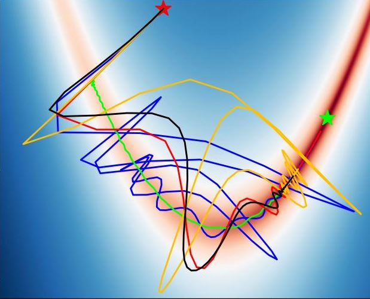
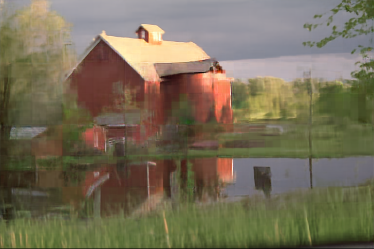

Isaac LiaoI am an undergraduate senior at MIT, double majoring in Computer Science and Physics, and doing machine learning research in the lab of Marin Soljačić. Within machine learning, my interests include variational inference, meta-learning, optimization, and sparsity. In my leisure time, I enjoy skating, game AI programming, and music. I won the Battlecode AI Programming Competition in 2022. I was a silver medalist in the International Physics Olympiad (IPhO) in 2019 and an honorable mention in IPhO 2018. Email / CV / Google Scholar |

|
Machine Learning Research |
|

|
Isaac Liao, Rumen R. Dangovski, Jakob N. Foerster, Marin Soljačić arXiv, 2022 Introduces a novel machine learning optimizer which blends learn to optimize (L2O) meta-learning techniques with quasi-Newton optimization methods using sparse neural networks. Theoretical results regarding convergence in convex and nonconvex settings and parameter-efficient representation of compositionally sparse optimizer strategies, with experimental support. |
Research-like Class Projects |
|

|
Isaac Liao 6.819 Advances in Computer Vision Treatment of variational inference from the point of view of information compression, with application to images. Ideation, refinement, theoretical analysis, and empirical testing of ELBO maximization-based lossless image compression schemes resembling VAEs and BNNs. Reparameterization trick, hierarchical depth, and KL annealing schedules, and rejection sampling all independently reinvented without prior knowledge of existing variational inference techniques. |

|
Isaac Liao 8.06 Quantum Physics III Rederivation of joint eigenvalue distribution of random Hermitian matrices, using a combination of second-order quantum perturbation theory, Metropolis-Hastings, and Brownian motion. Rederivation of Wigner semicircle law. Connections to chaotic quantum billiards and applicaion to emission specra of quantum dots. |
Miscellaneous |

|
Summary report for my strategy in the Battlecode 2021 Game AI programming competition, in which I got 7th place worldwide. |
|
This website was produced from a template made by Jon Barron. |